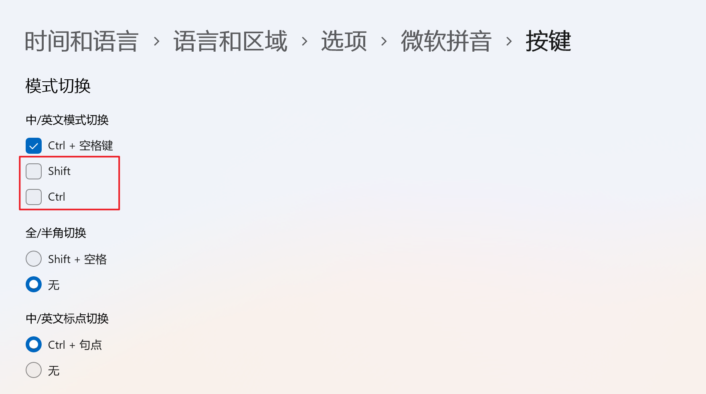

Win11¶
由于之前的Win10一直出现更新失败的情况，最后还是一咬牙升级了win11.
然后第一安装被微软坑了，安装了一个企业评估版，只有90天的有效期。 最后遵循 链接 进行了重新的下载和安装。
将自己的开发机器（配置拉满的机器）安装为Win11，重要的原因就是可以更好的支持WSL, 日常我只需要使用Windows，就可以很好的跑实验了。
Configs¶
激活和安装驱动的问题就不说了…
网络上，本来配合旁路由设置是很好的。 但是我发现默认分配的ipv6的dns非常的noisy，
nslookup fast.com
输出结果
nslookup fast.com
服务器: UnKnown
Address: 2408:xxxxx::1
非权威应答:
名称: fast.com
Addresses: 2a02:26f0:dc:38d::24fe
2a02:26f0:dc:392::24fe
23.67.137.188
这说明使用了ipv6的dns服务器给出了dns响应，这非常的不好。
因此，尝试了各种办法， 最后设置ipv6的dns为 ::1, 就很好的解决了这个问题。
其中的Debug和GPT过程记录如下：
GPT
nesth命令来来调整Windows使用IPv6和IPv4的优先级，使得IPv4优先
netsh interface ipv6 set prefixpolicy ::/0 35 4
netsh interface ipv6 set prefixpolicy 2002::/16 30 3
netsh interface ipv6 set prefixpolicy 0::/0 10 2
设置 HKEY_LOCAL_MACHINE\SYSTEM\CurrentControlSet\Services\Tcpip6\Parameters\
reg add "HKEY_LOCAL_MACHINE\SYSTEM\CurrentControlSet\Services\Tcpip6\Parameters" /v DisabledComponents /t REG_DWORD /d <value> /f
键盘配置¶
为了尽可能的和MacOS保持一样的输入体验，需要将Caps键设置为中英文的切换。
并且取消原来的中英文切换的 shift键。具体的配置在

另外，Terminal的默认配置会和vim的块操作快捷键冲突，
解决办法，打开 windows terminal 的配置文件，删除下面这行配置：
{ "command": "paste", "keys": "ctrl+v" },
WSL¶
Service¶
首先需要安装 openssh-server, 这样的 frpc.service 才能得到启用
例如，将下面的frpc.service 放入到 /etc/systemd/system/frpc.service
[Unit]
Description=frpc client
After=network.target
[Service]
ExecStart=/root/deploy/frp/frpc -c /root/deploy/frp/frpc.toml
Restart=always
User=root
[Install]
WantedBy=default.target
然后使用如下的命令启用，
cp frpc.service /etc/systemd/system/frpc.service`
systemctl daemon-reload
systemctl enable frpc.service
systemctl start frpc.service
开机启动¶
一定要确保 WSL 当前处于最新版本（即 WSL September 2023 update 之后的版本），系统自带版本不支持这种开机启动。
打开任务计划程序。
点击右边的创建任务。
任务的名称和描述可以随便写，安全选项需要选择“不管用户是否登录都要运行”。
点击上方的“触发器”选项卡，点新建按钮，然后会卡几秒（微软的老 BUG ）。开始任务中选择“启动时”，然后点击确定。
“操作”选项卡中，点新建按钮，然后“程序或脚本”下的文本框里输入"C:\Program Files\WSL\wsl.exe"，引号也要带上（非常重要，除了这个目录下的wsl.exe，其他位置的都不行）。添加参数可以根据需要填写，比如-d Debian指定发行版。
“条件”选项卡中，所有选项全部取消勾选。
”设置“选项卡中，除了“允许按需执行任务”，其他全部取消勾选。
点击确定关闭窗口。可以先右键运行试试效果。这种方法运行的 WSL 即使当前用户注销也是会继续运行的。
Network¶
配置 C:\Users\xxx\.wslconfig 文件如下：
[wsl2]
networkingMode=mirrored
dnsTunneling=true
firewall=true
autoProxy=true